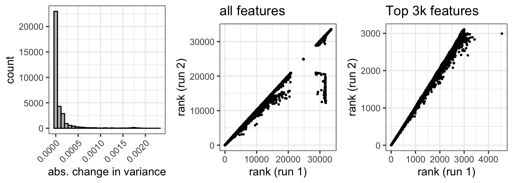
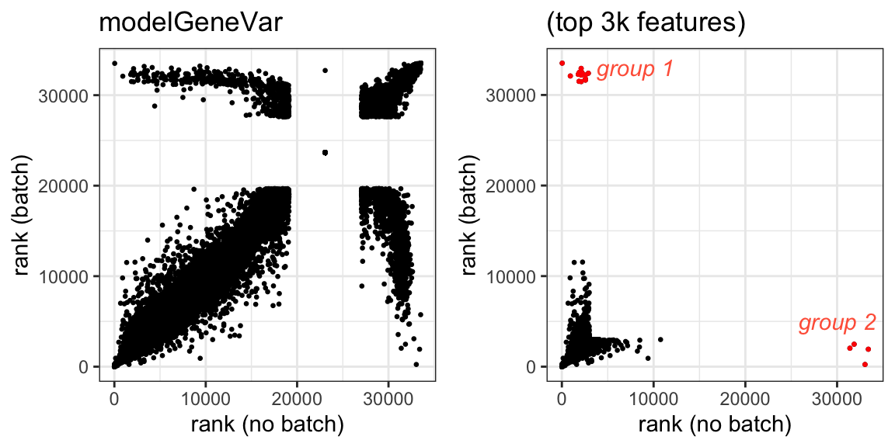
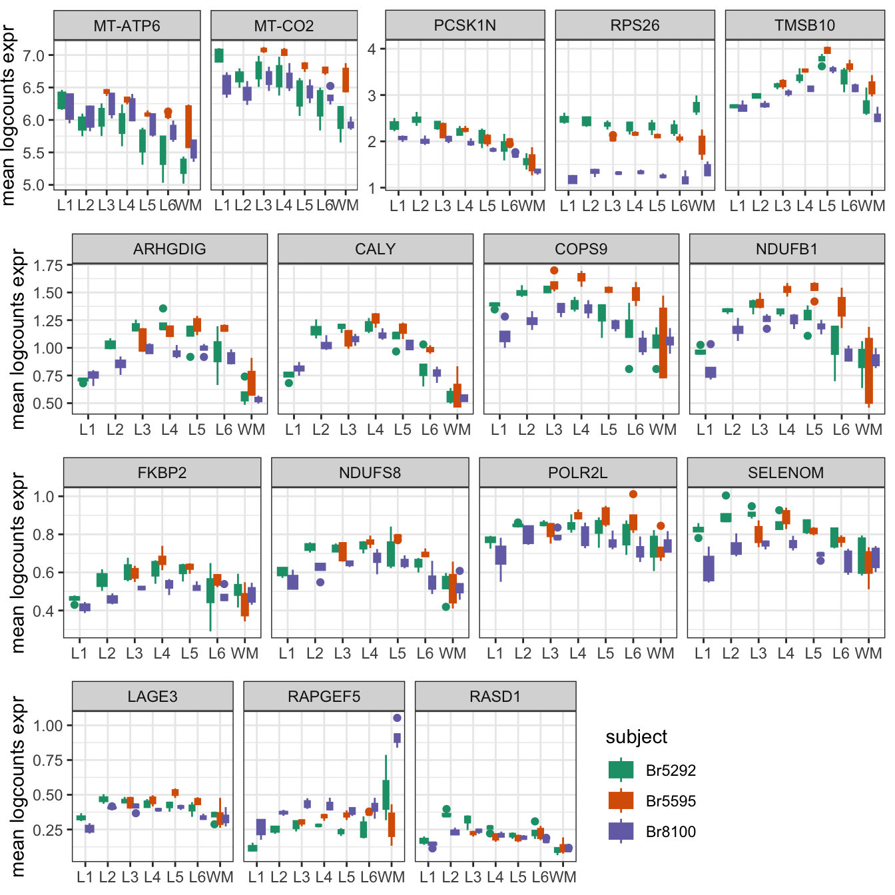
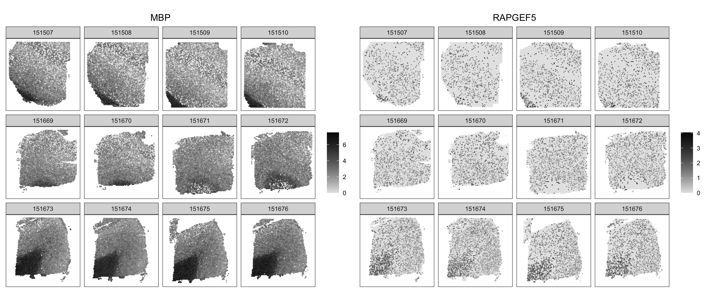
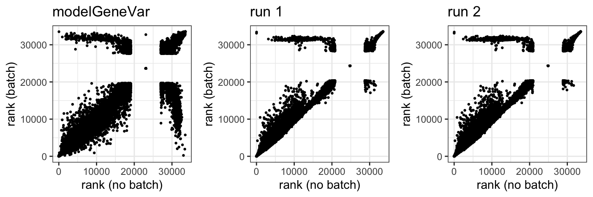
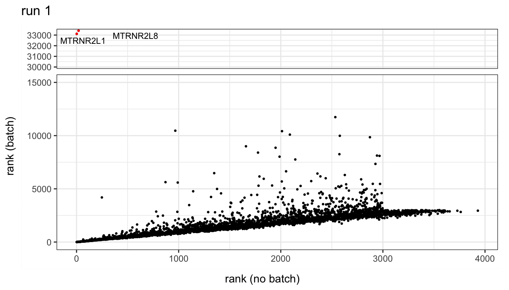
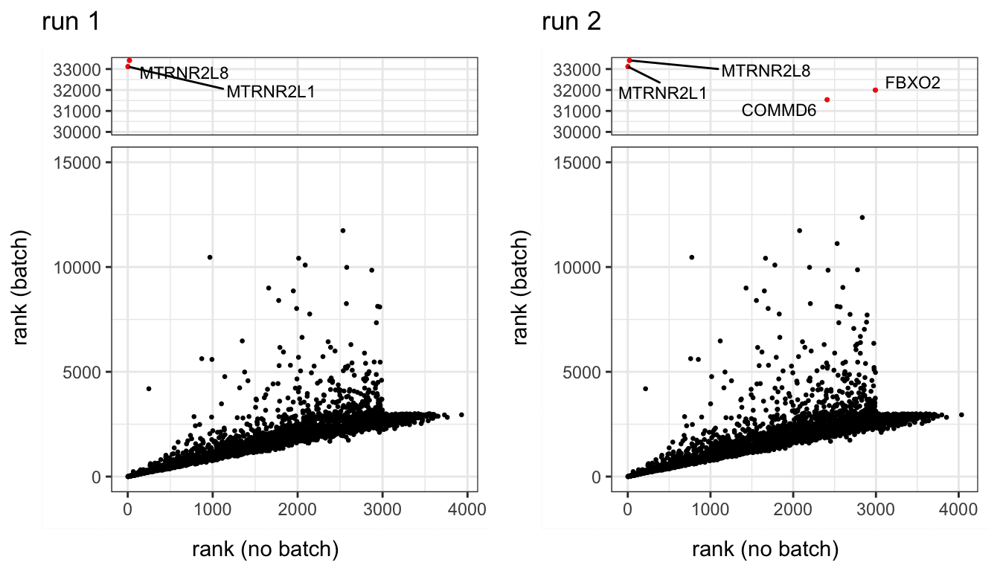
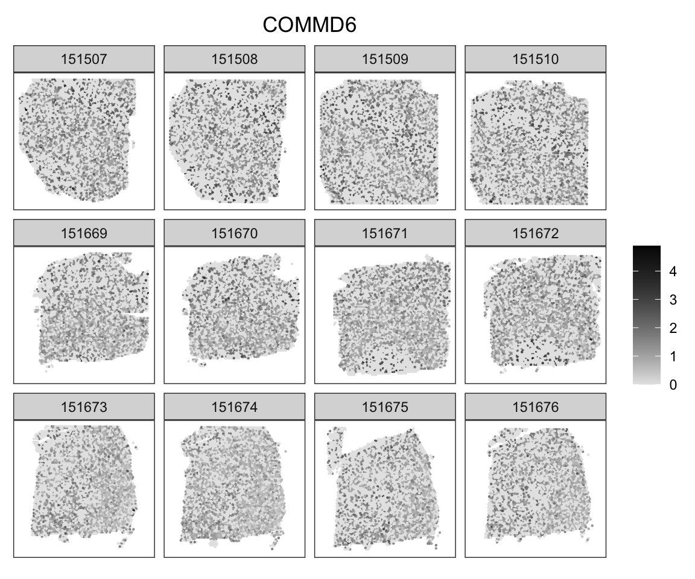
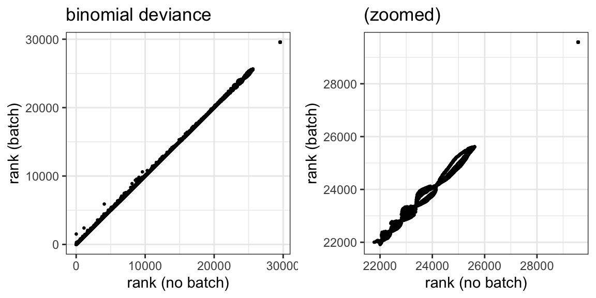
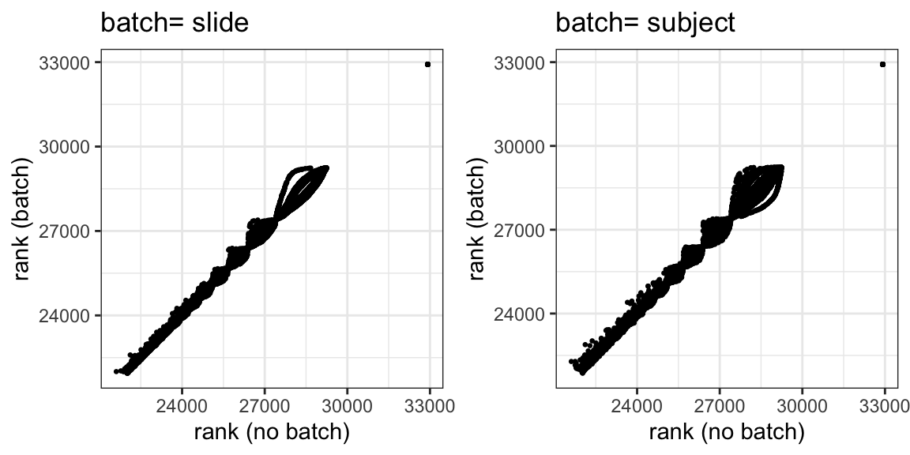

set.seed(123)5 Things to look into further
5.1 modelGeneVar vs poisson distribution
5.1.1 poisson model not reproducible
We observed that even with the same seed, the scran::modelGeneVarByPoisson function does not return identical variance results, leading to changes in rank that can be impactful when looking at HVGs.
library(spatialLIBD)
spe <- fetch_data(type = "spe")The modelGeneVar function and scry::devianceFeatureSelection function both produce identical results with different runs.
mv <- modelGeneVar(logcounts(spe))
mv1 <- modelGeneVar(logcounts(spe))bd <- devianceFeatureSelection(counts(spe), fam="binomial")
bd1 <- devianceFeatureSelection(counts(spe), fam="binomial")identical(mv[,"bio"], mv1[,"bio"])[1] TRUEidentical(bd, bd1)[1] TRUEThe modelGeneVarByPoisson function does not.
mvp <- modelGeneVarByPoisson(logcounts(spe))
mvp1 <- modelGeneVarByPoisson(logcounts(spe))identical(mvp[,"bio"], mvp1[,"bio"])[1] FALSEFigure S1. Minor changes in variance produced by different poisson model runs impact rank

5.1.2 difference due to batch effect
modelGeneVar
Using the modelGeneVar function, the difference in gene rank due to batch= subject does not identify possibly subject-biased genes.
mv.batch <- modelGeneVar(logcounts(spe), block=as.factor(spe$subject))Figure S2. Comparison of feature rank with and without subject batch

Things to note: weird ties a 20k, massive spread (compare to Figure S8), two groups ranked highly with one model and not another.
We looked at both group 1 and group 2 genes to see if they exhibit true subject-biased expression. Plots showing average expression of each sample across spatial domain show that many of these features exhibit graded expression across cortical layers suggesting that they are actually spatially variable. There is also a notable absence of outliers (which are seen with true subject-biased expression).
Figure S3. Features flagged by the mean-variance model are not subject-biassed

Other than RPS26 (explored in Figure 2.9), RAPGEF5 exhibited the greatest difference in expression between subjects. However, looking at the spatial expression of RAPGEF5 indicates no subject bias.
Figure S4. RAPGEF5 is not biased by subject but correlates with WM

modelGeneVarByPoisson
Using the modelGeneVarByPoisson function does identify some rank differences due to batch= subject but are inconsistent (reproducibility). Using the poisson assumptions for technical variation reduced the number of features that were highly ranked with batch= NULL and highly ranked with batch= subject (compared to modelGeneVar).
mvp.batch <- modelGeneVarByPoisson(logcounts(spe), block=as.factor(spe$subject))Figure S5. Feature ranks based on mean-variance modeling are not consistent when batch effects are added

The small changes in variance between identical models can lead to changes in top ranked features and thus alter which genes are available to examine for subject-bias.
Figure S6. Top 3k features: Introduction of batch to poisson mean-variance model and inconsistencies between runs


Figure S7. COMMD6 expression is not influenced by subject identity

5.2 Odd sinusoidal pattern in binomial deviance model?
We found an add sinusoidal pattern emerges when comparing ranks from scry::devianceFeatureSelection with any dataset. This only occurs in the worst ranking features and so doesn’t appear when limiting the binomial deviance model to SVGs. We would anticipate increased noise in the relationship between ranks produced from the different models (with and without batch), but this structured pattern is odd.
5.2.1 spatialLIBD
bd <- devianceFeatureSelection(counts(spe), fam="binomial")
bd.batch <- devianceFeatureSelection(counts(spe), fam="binomial",
batch=as.factor(spe$subject))Figure S8. Influence of subject identity on rank calculated from binomial deviance model (all features)

This is true when we change the seed.
set.seed(456)
bd2 <- devianceFeatureSelection(counts(spe), fam="binomial")
bd2.batch <- devianceFeatureSelection(counts(spe), fam="binomial",
batch=as.factor(spe$subject))Figure S9. The linear relationship between feature ranks and the sinusoidal pattern are reproducible with different random number seeds

5.2.2 MBv dataset
The effect is also seen in our MBv dataset.
Figure S10. Sinusoidal pattern in MBv data when comparing two different batch effects
